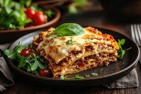

Lasagna

Description:
Lasagna is a classic Italian comfort food made with layers of pasta, rich meat sauce, creamy béchamel or ricotta, and plenty of melted cheese. It’s hearty, flavorful, and perfect for feeding a crowd.
This recipe brings together slow-simmered tomato sauce, tender pasta sheets,
and gooey mozzarella for a dish that’s both satisfying and delicious. Serve it
hot with a side of garlic bread or a crisp salad for a complete meal.
Ingredients
- 12 lasagna noodles
- 1 pound ground beef
- 1 jar (24 oz) marinara or tomato sauce
- 2 cups ricotta cheese
- 3 cups shredded mozzarella cheese
- 1/2 cup grated Parmesan cheese
- 1 egg
- 2 cloves garlic, minced
- 1 medium onion, chopped
- 2 tablespoons olive oil
- Salt and pepper, to taste
- Fresh basil or parsley for garnish (optional)
Steps
- Preheat oven to 375°F (190°C).
- Bring a large pot of salted water to a boil. Cook lasagna noodles according to package directions, then drain and set aside.
- In a skillet, heat olive oil over medium heat. Sauté onion and garlic until fragrant. Add ground beef, season with salt and pepper, and cook until browned.
- Stir in marinara or tomato sauce. Simmer for 10–15 minutes.
- In a bowl, mix ricotta cheese, egg, and half the Parmesan until smooth.
- Spread a thin layer of sauce on the bottom of a baking dish. Layer noodles, ricotta mixture, meat sauce, and mozzarella. Repeat layers until ingredients are used, finishing with sauce and mozzarella on top.
- Cover with foil and bake for 25 minutes. Remove foil and bake for another 20 minutes, until cheese is golden and bubbly.
- Let rest for 10 minutes before slicing. Garnish with fresh basil or parsley and serve.